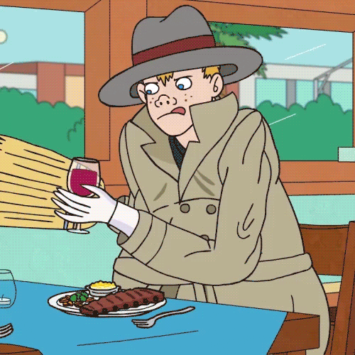

About Vincent
Vincent is an alleged human "adult male," whose face resembles a young boy named Kevin.
Vincent sampling some fine wine
Vincent's famous quotes:
- "Would you like a alcohol?"
- "Don’t be sad...Good horsey."
- "I went to stock market today. I did a business."
- "I like business... transactions."
Vincent's aquaintances
Vincent has an extensive network of aquaintances. Click the links below to learn more about them: